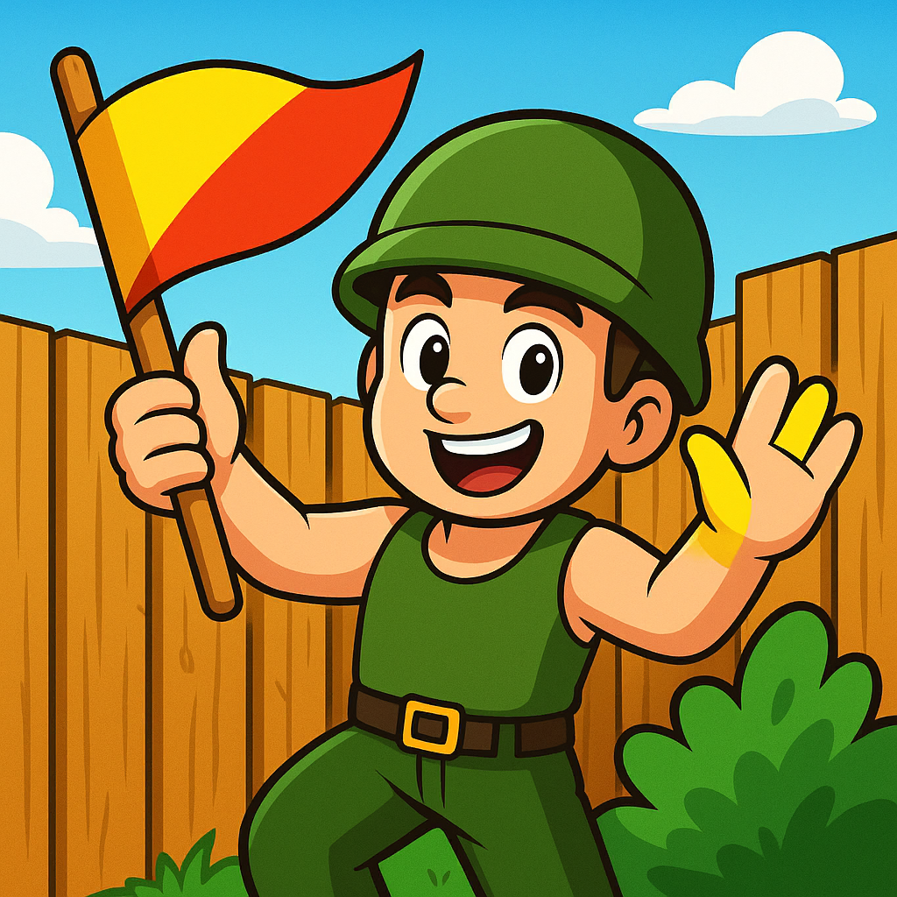

iOS
Released
Combat Maze
Work your way around the maze to find the flag while enemies try to stop you. Collect ammo, health, and secret items to survive.
- Unique 8-bit style graphics
- Original Commodore 64 music
- One giant world
- Retro items to collect throughout